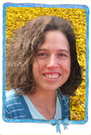

HEADMASTER AND TEACHER
She graduated in special pedagogy and has been working with children for 10 years. She was a teacher in nursery for 5 years,
she worked in a private English nursery, she was an assistant to an autistic boy, she has been one of camp leaders in a camp for mentally ill children.
She has 2 children on her own – a boy and a girl.
She is very patient, cheerful, friendly and happy to help.
She likes dancing, sport, theatre, arts, singing and music. She plays the piano and the guitar.
She likes herbs, flowers and a sun.

Elaine Mudříková
TEACHER AND PROFESIONAL INSTRUCTOR
She was born in the USA, state Illinois. She has been living in the Czech Republic for 10 years.
She graduated from Lincoln Christian University. She has a Degree in Educatoin, TESOL - specialization Teaching
English to Speakers of Other Languages.
She has been working with children for many years in the USA and in the Czech Republic. She is a co-writer of a
programme for learning English laguage– EATS – English Across the Subjects which is used by several schools and nurseries in the Czech Republic.
She taught using EATS at an elementary school in Jarov. She was also a teacher at an International School in
Prague. Currently, she works part time at elementary schools and preschools.
She is a great help to our stuff. She provides advice and materials. She visits our preschool regulary.
She has 5 children – a boy and 4 girls.
She is very patient, cheerful, good harted and optimistic and children love her.
MgA. Erika Čičmanová
TEACHER AND HEAD TEACHER OF ARTS
She graduated from University Hradec Kralove in Textil Work and from DAMU in Scenography of Alternative and Puppet Theatre.
She has been working with children for 6 years. She taught at an elementary school and she was a nanny. She looked after one
year old to ten year old children. She organizes workshops for children and is a camp leader for children with physical and combined illnesses.
She has a great artistic talent and she is very popular among children. She is patient and friendly. She is a free spirit.
She likes yoga, sports and theatre.
Hattie Thomas
TEACHER AND ENGLISH SPEAKER
She graduated in Rose Bruford College – a theatre college. She has been working with children during children
theatre plays preparations as well as in art workshops specialised in art and drama.
Hattie is an English native speaker. She comes form London. Theatre is her profession and her hobby at the
same time. She loves puppet theatre above all. She is not only an actress but she also makes puppets. She takes
an active part in graphic design of theatre.
She plays the violin and saxophone.
Taťána Votavová
ASSISTANT
She graduated a business school.
She takes care of our business matters. She helps children and teachers in our preschool.
She has a lot of experience with children.
She has 3 children – Eliska, Kuba and Matysek.
She is interested in automatic drawing, she has a certificate in intuitive writing, cards interpretation and
is a sambala mister 2002. She does yoga and thai-chi.
Alena Turneberová
TEACHER AND ENGLISH SPEAKER
She studies Anglophone Studies at the University.
After finnishing a Secondary school, she moved to England where she was studying English and looking after 4 children.
She stayed there for 3 years. Then she was looking after 2 children in the USA for 2 years.
She worked as a head teacher at Czech–English Preschool in Prague.
She has FCE and CAE certificates.
She speaks with children at our nursery only in English.
She loves travelling to foreign countries as well as trips in the Czech Republic. In her free time she studies,
reads, does sports and plays board games. She loves children, books and chocolate.
Emilly Mudříková
TRAINEE AND NATIVE ENGLISH SPEAKER
She was born in the USA. Currently, she lives in the Czech Republic and she spends summers back in the USA.
She was born to a bilingual family – her mother is American and her father is Czech.
She speakes both languages fluently. At our preschool she speakes mainly in English.
She loves children. She has 4 siblings.
She comes to our preschool for 1 afternoon a week to play and help with children.